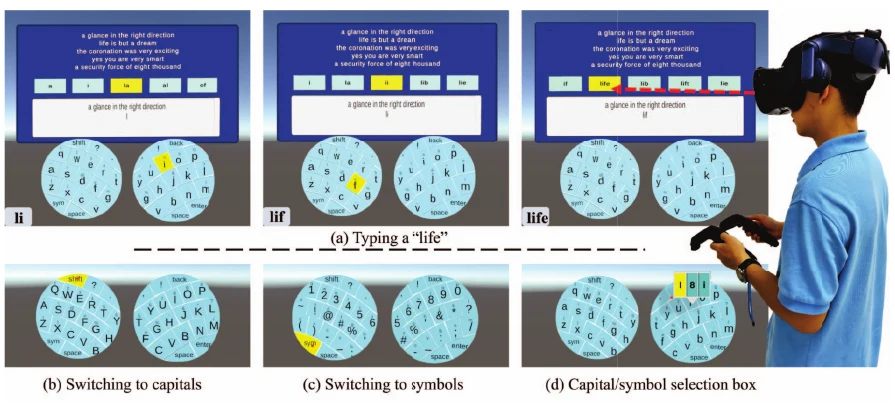

IEEE VR · 2024-03-16 · 已发表
FanPad: A Fan Layout Touchpad Keyboard for Text Entry in VR
王子腾：共同第一作者（署名第二） / Co-first author
2024 IEEE Conference Virtual Reality and 3D User Interfaces (VR) , pp. 222-232 · 10.1109/vr58804.2024.00045
Abstract
Text entry poses a significant challenge in the realm of virtual reality (VR). This paper introduces FanPad, a novel solution designed to facilitate dual-hand text input within head-mounted displays (HMDs). FanPad accomplishes this by ingeniously mapping and curving the 26 typing keys (T26) QWERTY keyboard onto the touchpads of both controllers. The curved key layout of FanPad is derived from the natural movement of the thumb when interacting with the touchpad, resembling an arc with a thumb-length fixed radius. To optimize the experience, we introduce a customization process for the FanPad curve to better cope with individual hand shapes and thumb movements. We also provide a version with more overlap area named FanPad-Ov for different users with different typing habits. Our first user study examined the effects of curving and different overlap areas by comparing four potential layouts. The results clearly favor the FanPad and FanPad-Ov layout compared to the nocurving version, SKPad(-Ov). Subsequently, the second user study was conducted to assess long-term performance and improvement on customized FanPads. Notably, novices achieved a typing speed of 19.73 words per minute (WPM), demonstrating a remarkable increase of 58.47% after a 60-phrase training in six days. The highest typing speed reached an impressive 24.19 WPM.
THE IDEA
让 VR 手柄上的键盘顺着拇指运动：把 QWERTY 拆分到双手触控板，再把按键行弯成适合拇指的扇形。
A curved, customizable QWERTY layout follows thumb movement on two VR controller touchpads.
戴着头显输入文字时，反复抬手指向键盘容易疲劳。FanPad 保留熟悉的 QWERTY 关系，把操作范围缩到两个手柄触控板，让拇指完成输入。

把 QWERTY 分到双手
将 26 个字母映射到左右触控板，保留熟悉的按键相对关系。
顺着拇指轨迹弯曲
按拇指的自然运动弧线调整键盘行，并通过校准适应手型与持握方式。
选择重叠区与输入方式
FanPad-Ov 提供更大的左右手重叠区域，允许不同输入习惯；触摸与释放选择字母，扳机确认候选词。
实验告诉我们什么
| 评测 | 结果 / 观察 | 解释范围 |
|---|---|---|
| 布局研究 | 比较 FanPad / FanPad-Ov 与未弯曲的 SKPad / SKPad-Ov | 区分弯曲布局与重叠区的作用。 |
| 学习研究 | 六天训练后报告 19.73 WPM | 论文报告较初始表现提高 58.47%；不是与所有 VR 键盘的通用对比。 |
| 最高输入速度 | 24.19 WPM | 研究中的最高值，不是所有参与者的平均值。 |
作者顺序、共同贡献脚注、方法与数值来自 IEEE VR 2024 出版全文，pp. 222–232。
演示 / Demo
FanPad 作者演示：双手触控板输入与布局交互。
适用边界
结论对应论文中的双手触控板、布局与短期训练。硬件触控范围、个人手型和练习经验会影响表现，不能直接推到无触控板控制器或长期文本编辑场景。
我的贡献
共同第一作者（署名第二）。论文首页明确注明 Ziteng Wang contributed equally to this paper。负责方法设计优化、部分系统实现和论文撰写、用户实验与演示系统制作。
引用这篇论文
Jian Wu, Ziteng Wang, Lili Wang, Yuhan Duan, Jiaheng Li. FanPad: A Fan Layout Touchpad Keyboard for Text Entry in VR. 2024 IEEE Conference Virtual Reality and 3D User Interfaces (VR), 2024. DOI: 10.1109/vr58804.2024.00045
@inproceedings{fanpad2024,
title = {{FanPad: A Fan Layout Touchpad Keyboard for Text Entry in VR}},
author = {Jian Wu and Ziteng Wang and Lili Wang and Yuhan Duan and Jiaheng Li},
booktitle = {2024 IEEE Conference Virtual Reality and 3D User Interfaces (VR)},
year = {2024},
pages = {222--232},
doi = {10.1109/vr58804.2024.00045},
url = {https://doi.org/10.1109/vr58804.2024.00045}
}